|
Roda JC - NAC (3-3) 5 november 2005
|
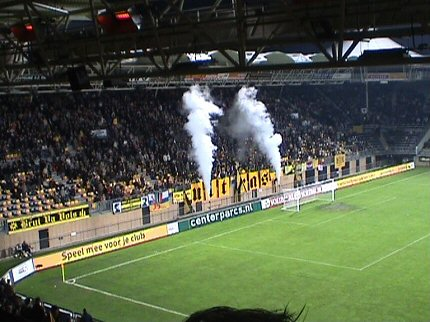
De west-side pakt uit met vuurwerk.
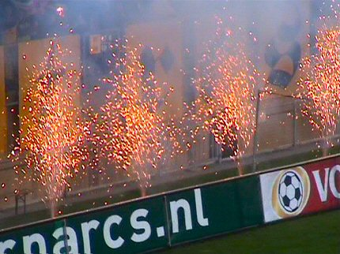
Hulde voor deze mooie sfeer-actie.
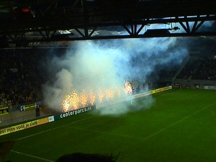
Het omschakelingsproces van verboden frituurpannen naar toegestane
pyromanie is welhaast surrealistisch.
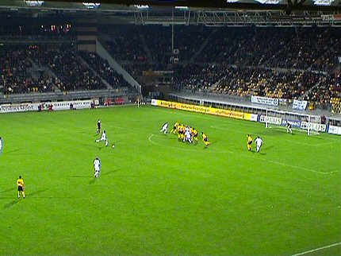
In de 13e min. gebeurt datgeen waar menig Rodasupporter vooraf vreesde:
een vrije trap. Van Hooijdonk benut hem: 0-1.
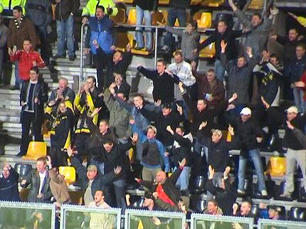
Feest bij de minimaal opgekomen Bredase gasten, (foto vergeten?).
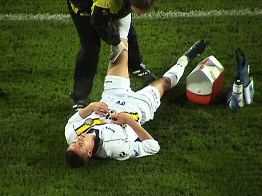
Direct na de voorsprong gaat NAC tijdrekken. De uitgetelde Jenner heeft
echter een serieus probleem want even later wordt hij vervangen door
Vonlanthen. 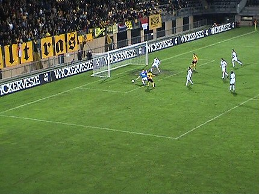
Mooi doelpunt van Sergio in de 25e minuut: 1-1.
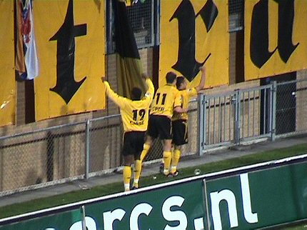
Sergio met Oper en Cissé gaan uit hun dak.
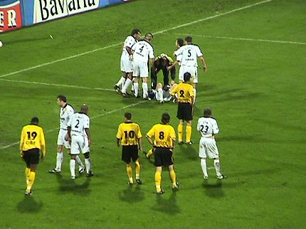
Kah ligt plat evenals Van Zwam. Het resulteert in een opstootje.
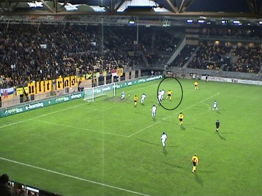
In minuut 45+2 scoort Oper 2-1.
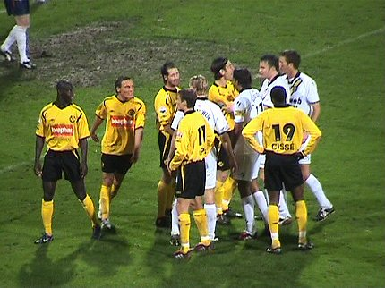
In de tweede helft laat Roda het initiatief gaandeweg aan NAC. Hier zien we
het voorspel van een nieuwe vrije trap van Pièrre, ditmaal zonder resultaat.
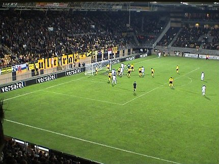
Penders scoort uit een hoekschop:2-2, (65').
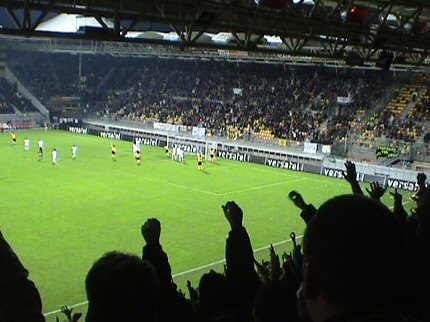
Vreugde voor niks. Van Dijk scoort weliswaar, maar dat doet hij direct
terwijl het een indirecte vrije trap betreft. Afgekeurd doelpunt derhalve.
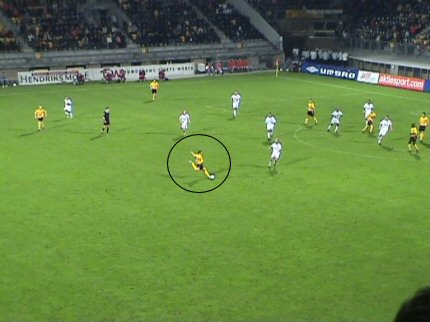
Typische Bodnar-goal; van grote afstand knalt hij de bal achter Van Zwam:
3-2, (84'). 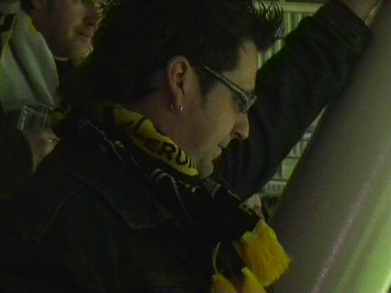
Hans Anders viert zijn feestje met paal Z16.
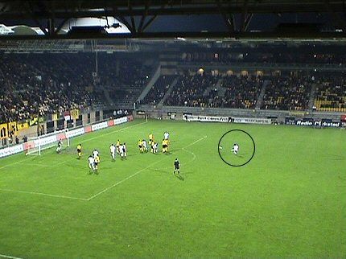
In de 92e! minuut verknalt Pi-Air het feest door alweer een vrije trap achter
Begois te krullen: 3-3.
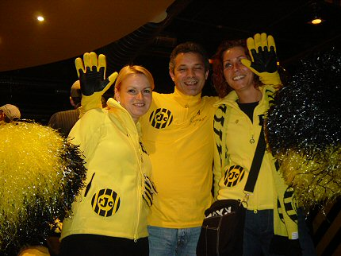
De nieuwe keepers van Roda JC....
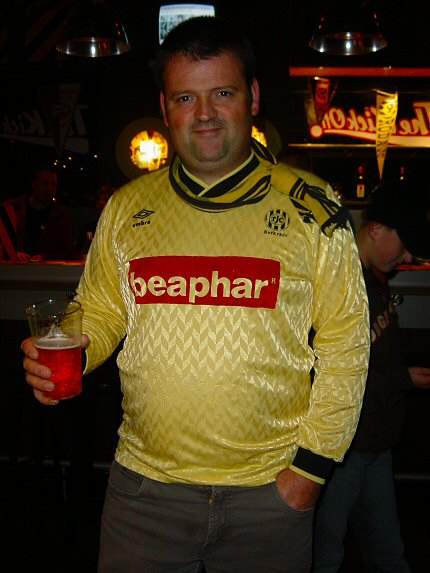
Pé in retroshirt (toen nog zonder "voor huisdieren").
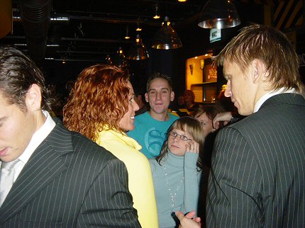
Kujovic en Bodor bezochten de Kickoff.
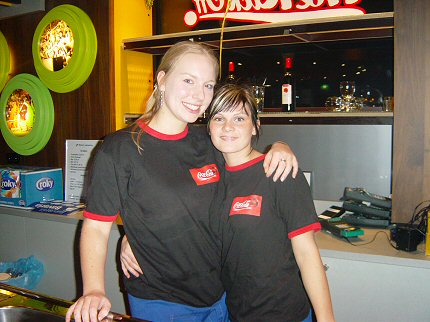
Ushi en Patricia. Dit vrolijke duo binnenkort op deze site te bewonderen als
de nieuwe Roda-girls! Wordt het toch nog gezellig ;-) © Koempels Pleasure Dome
|